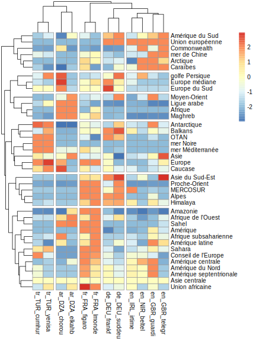

Chapter 8 Top World regions
8.1 Data
We laod an hypercube where the text of news has been removed and where we keep only the number of tags or proportion of news speaking from one or several regions (where1, where2), by media (who) and by time period (when)
# Load Hypercube and select period
hc_reg<-readRDS("hypercube/hc_reg.RDS") %>% filter(where1 !="_no_")
hc_reg %>% filter(is.na(when)==F, when < as.Date("2021-01-01")) who when where1 where2 tags news
1: fr_FRA_figaro 2019-01-01 CO_EUR CO_EUR 15 15
2: fr_FRA_figaro 2019-01-01 SE_medit SE_medit 2 2
3: fr_FRA_figaro 2019-01-01 OR_AfrUn OR_AfrUn 2 2
4: fr_FRA_figaro 2019-01-01 OR_EU OR_EU 19 19
5: fr_FRA_figaro 2019-01-01 OR_CoEur OR_CoEur 3 3
---
3237: ar_DZA_chorou 2020-12-01 LA_cauca LA_cauca 1 1
3238: ar_DZA_chorou 2020-12-01 LA_maghr LA_maghr 2 2
3239: ar_DZA_chorou 2020-12-01 OR_ArLig OR_ArLig 2 2
3240: ar_DZA_chorou 2020-12-01 CO_ASI CO_ASI 1 1
3241: ar_DZA_chorou 2020-12-01 LA_sahel LA_sahel 1 1# Define weights correction for equal contribution of media
wgt<-hc_reg[,list(coeff = sum(tags)), list(who)] %>%
mutate(coeff=mean(coeff)/coeff)
hc_reg<-left_join(hc_reg,wgt)Joining, by = "who"hc_reg$news_wgt<-hc_reg$news*hc_reg$coeff
# Load table of label and choose language
reg_def<-read.table("dict/worldgeo_def_V2.csv", sep=";",quote = '"', encoding = "UTF-8",header=T)
tab_def<-reg_def %>% filter(lang=="fr") %>% select(code,type,label)
tab_def<-tab_def[duplicated(tab_def$label)==F,]8.2 Top 50 regions in full corpus
8.2.1 Unweighted
We can propose firstly a table of top entities in the whole corpus of newspapers with index 100 for the first entity.
# Compute
df<-hc_reg[where1 !="_no_",list(nb = sum(news)), list(where1)]
df<-merge(tab_def,df,by.x="code",by.y="where1",all.x=F,all.y=T)
df<-df[order(df$nb, decreasing = T),]
row.names(df)<-1:dim(df)[1]
df$index<-100*df$nb/max(df$nb)
kable(head(df,50), digits=c(NA,NA,NA,0,2),row.names = T)| code | type | label | nb | index | |
|---|---|---|---|---|---|
| 1 | OR_EU | org | Union européenne | 7622 | 100.00 |
| 2 | CO_EUR | cont | Europe | 5326 | 69.88 |
| 3 | CO_AFR | cont | Afrique | 1214 | 15.93 |
| 4 | SE_medit | sea | mer Méditerranée | 953 | 12.51 |
| 5 | OR_NATO | org | OTAN | 829 | 10.88 |
| 6 | CO_ASI_minor | cont | Asie mineure | 499 | 6.55 |
| 7 | SE_black | sea | mer Noire | 478 | 6.28 |
| 8 | LA_east_middle | land | Moyen-Orient | 342 | 4.49 |
| 9 | CO_ASI | cont | Asie | 338 | 4.43 |
| 10 | LA_alpen | land | Alpes | 253 | 3.32 |
| 11 | CO_AMR | cont | Amérique | 230 | 3.01 |
| 12 | LA_sahel | land | Sahel | 225 | 2.95 |
| 13 | SE_arcti | sea | Arctique | 201 | 2.64 |
| 14 | CO_AMR_latin | cont | Amérique latine | 150 | 1.97 |
| 15 | LA_amazon | land | Amazonie | 136 | 1.79 |
| 16 | CO_AFR_south | cont | Afrique australe | 130 | 1.70 |
| 17 | LA_sahara | land | Sahara | 124 | 1.63 |
| 18 | CO_ANT | cont | Antarctique | 116 | 1.53 |
| 19 | OR_CoEur | org | Conseil de l’Europe | 94 | 1.24 |
| 20 | SE_carai | sea | Caraïbes | 92 | 1.21 |
| 21 | LA_maghr | land | Machrek | 87 | 1.14 |
| 22 | LA_east_near | land | Proche-Orient | 86 | 1.13 |
| 23 | SE_polyn | sea | Polynésie | 83 | 1.09 |
| 24 | CO_AMR_south | cont | Amérique du Sud | 76 | 1.00 |
| 25 | CO_ERA | cont | Eurasie | 70 | 0.92 |
| 26 | LA_balka | land | Balkans | 59 | 0.77 |
| 27 | CO_AFR_west | cont | Afrique de l’Ouest | 58 | 0.77 |
| 28 | CO_AMR_centr | cont | Amérique centrale | 53 | 0.70 |
| 29 | OR_Merco | org | MERCOSUR | 53 | 0.69 |
| 30 | OR_ArLig | org | Ligue arabe | 45 | 0.59 |
| 31 | OR_comwl | org | Commonwealth | 44 | 0.58 |
| 32 | LA_cauca | land | Caucase | 43 | 0.56 |
| 33 | CO_AMR_north | cont | Amérique du Nord | 42 | 0.55 |
| 34 | CO_AMR_north | cont | Amérique septentrionale | 42 | 0.55 |
| 35 | CO_ASI_south_east | cont | Asie du Sud-Est | 42 | 0.54 |
| 36 | LA_himal | land | Himalaya | 42 | 0.54 |
| 37 | SE_antil | sea | Antilles | 41 | 0.54 |
| 38 | SE_china_south | sea | Mer de Chine S. | 40 | 0.53 |
| 39 | OR_AfrUn | org | Union africaine | 38 | 0.50 |
| 40 | SE_persi | sea | golfe Persique | 34 | 0.45 |
| 41 | CO_EUR_east | cont | Europe médiane | 34 | 0.44 |
| 42 | CO_ASI_centr | cont | Asie centrale | 32 | 0.43 |
| 43 | CO_ASI_pacif | cont | Asie-Pacifique | 28 | 0.36 |
| 44 | SE_india | sea | océan Indien | 26 | 0.34 |
| 45 | CO_AFR_ssahr | cont | Afrique subsaharienne | 26 | 0.33 |
| 46 | CO_AFR_east | cont | Afrique de l’Est | 20 | 0.26 |
| 47 | OR_ECWAS | org | communauté économique des États de l’Afrique de l’Ouest | 20 | 0.26 |
| 48 | CO_AFR_north | cont | Afrique du Nord | 20 | 0.26 |
| 49 | LA_scand | land | Scandinavie | 19 | 0.25 |
| 50 | CO_EUR_centr | cont | Europe centrale | 18 | 0.24 |
8.2.2 Weighted
df<-hc_reg[where1 !="_no_",list(nb = sum(news_wgt)), list(where1)]
df<-merge(tab_def,df,by.x="code",by.y="where1",all.x=F,all.y=T)
df<-df[order(df$nb, decreasing = T),]
row.names(df)<-1:dim(df)[1]
df$index<-100*df$nb/max(df$nb)
kable(head(df,50), digits=c(NA,NA,NA,0,2),row.names = T)| code | type | label | nb | index | |
|---|---|---|---|---|---|
| 1 | OR_EU | org | Union européenne | 7171 | 100.00 |
| 2 | CO_EUR | cont | Europe | 5050 | 70.42 |
| 3 | CO_AFR | cont | Afrique | 1916 | 26.72 |
| 4 | SE_medit | sea | mer Méditerranée | 779 | 10.86 |
| 5 | OR_NATO | org | OTAN | 680 | 9.49 |
| 6 | LA_east_middle | land | Moyen-Orient | 396 | 5.53 |
| 7 | LA_sahel | land | Sahel | 369 | 5.14 |
| 8 | LA_sahara | land | Sahara | 362 | 5.05 |
| 9 | CO_ASI | cont | Asie | 331 | 4.62 |
| 10 | SE_black | sea | mer Noire | 328 | 4.58 |
| 11 | CO_ASI_minor | cont | Asie mineure | 305 | 4.25 |
| 12 | LA_alpen | land | Alpes | 242 | 3.38 |
| 13 | SE_arcti | sea | Arctique | 188 | 2.63 |
| 14 | CO_AMR | cont | Amérique | 182 | 2.54 |
| 15 | LA_maghr | land | Machrek | 174 | 2.43 |
| 16 | CO_AMR_latin | cont | Amérique latine | 156 | 2.18 |
| 17 | LA_east_near | land | Proche-Orient | 120 | 1.67 |
| 18 | CO_AFR_south | cont | Afrique australe | 114 | 1.59 |
| 19 | LA_amazon | land | Amazonie | 114 | 1.59 |
| 20 | CO_ANT | cont | Antarctique | 108 | 1.51 |
| 21 | CO_AFR_west | cont | Afrique de l’Ouest | 87 | 1.21 |
| 22 | SE_carai | sea | Caraïbes | 86 | 1.19 |
| 23 | CO_AMR_south | cont | Amérique du Sud | 85 | 1.19 |
| 24 | OR_ArLig | org | Ligue arabe | 81 | 1.12 |
| 25 | OR_CoEur | org | Conseil de l’Europe | 67 | 0.94 |
| 26 | SE_polyn | sea | Polynésie | 65 | 0.91 |
| 27 | LA_balka | land | Balkans | 55 | 0.77 |
| 28 | OR_AfrUn | org | Union africaine | 53 | 0.74 |
| 29 | LA_himal | land | Himalaya | 48 | 0.67 |
| 30 | OR_Merco | org | MERCOSUR | 48 | 0.67 |
| 31 | OR_comwl | org | Commonwealth | 46 | 0.64 |
| 32 | CO_AFR_north | cont | Afrique du Nord | 46 | 0.64 |
| 33 | CO_ASI_south_east | cont | Asie du Sud-Est | 46 | 0.64 |
| 34 | CO_ERA | cont | Eurasie | 45 | 0.62 |
| 35 | CO_AMR_centr | cont | Amérique centrale | 44 | 0.62 |
| 36 | SE_china_south | sea | Mer de Chine S. | 43 | 0.60 |
| 37 | LA_cauca | land | Caucase | 42 | 0.58 |
| 38 | CO_AMR_north | cont | Amérique du Nord | 35 | 0.49 |
| 39 | CO_AMR_north | cont | Amérique septentrionale | 35 | 0.49 |
| 40 | SE_persi | sea | golfe Persique | 35 | 0.48 |
| 41 | CO_EUR_east | cont | Europe médiane | 33 | 0.47 |
| 42 | SE_antil | sea | Antilles | 32 | 0.45 |
| 43 | CO_AFR_ssahr | cont | Afrique subsaharienne | 32 | 0.45 |
| 44 | SE_india | sea | océan Indien | 29 | 0.41 |
| 45 | CO_EUR_south | cont | Europe du Sud | 24 | 0.34 |
| 46 | CO_ASI_centr | cont | Asie centrale | 23 | 0.32 |
| 47 | CO_EUR_centr | cont | Europe centrale | 22 | 0.30 |
| 48 | CO_AFR_east | cont | Afrique de l’Est | 21 | 0.30 |
| 49 | CO_ASI_pacif | cont | Asie-Pacifique | 21 | 0.29 |
| 50 | OR_ECWAS | org | communauté économique des États de l’Afrique de l’Ouest | 16 | 0.22 |
8.3 Top 10 regions by media
8.3.1 German newspapers - Top 10 regions
# Compute
df<-hc_reg[where1 !="_no_",list(nb = sum(news)), list(who, where1)] %>%
group_by(who) %>%
filter(where1 != "Q828")%>%
mutate(pct = 100*nb/max(nb),
rnk = rank(-nb))
df_sel <- df %>% filter(substr(who,4,6)=="DEU", rnk < 11)
df_sel<-merge(df_sel,tab_def,by.x="where1",by.y="code")
res <- df_sel %>% filter(rnk < 11) %>% select(who, rnk,label, pct) %>% mutate(who=substr(who,4,12))
res<-res[order(res$who, res$rnk),]
tab1<-res[1:10,2]
names(tab1) <- c("Rank")
tab2<-res[1:10,c(3,4)]
names(tab2)<-c(paste("FAZ","Region",sep="_"),paste("FAZ","pct",sep=" "))
tab3<-res[11:20,c(3,4)]
names(tab3)<-c(paste("Süd. Zeit.","Region",sep="_"),paste("Süd. Zeit.","pct",sep=" "))
tab<-cbind(tab1,tab2,tab3)
kable(tab,digits=1, row.names = F)| tab1 | FAZ_Region | FAZ pct | Süd. Zeit._Region | Süd. Zeit. pct |
|---|---|---|---|---|
| 1 | Union européenne | 100.0 | Union européenne | 100.0 |
| 2 | Europe | 51.0 | Europe | 38.6 |
| 3 | OTAN | 10.7 | Moyen-Orient | 8.1 |
| 4 | Afrique | 7.0 | OTAN | 7.3 |
| 5 | Afrique australe | 5.1 | Afrique | 6.7 |
| 6 | mer Méditerranée | 4.1 | mer Méditerranée | 5.6 |
| 7 | Asie | 3.5 | Alpes | 3.7 |
| 8 | Moyen-Orient | 3.0 | Afrique australe | 2.7 |
| 9 | Alpes | 2.9 | Proche-Orient | 1.9 |
| 10 | Europe médiane | 1.6 | Amérique du Sud | 1.9 |
8.3.2 French newspapers - Top 10 regions
# Compute
df<-hc_reg[where1 !="_no_",list(nb = sum(news)), list(who, where1)] %>%
group_by(who) %>%
filter(where1 != "Q828")%>%
mutate(pct = 100*nb/max(nb),
rnk = rank(-nb))
df_sel <- df %>% filter(substr(who,4,6)=="FRA", rnk < 11)
df_sel<-merge(df_sel,tab_def,by.x="where1",by.y="code")
res <- df_sel %>% filter(rnk < 11) %>% select(who, rnk,label, pct) %>% mutate(who=substr(who,4,12))
res<-res[order(res$who, res$rnk),]
tab1<-res[1:10,2]
names(tab1) <- c("Rank")
tab2<-res[1:10,c(3,4)]
names(tab2)<-c(paste("Figaro","Region",sep="_"),paste("Figaro","pct",sep=" "))
tab3<-res[11:20,c(3,4)]
names(tab3)<-c(paste("Le Monde","Region",sep="_"),paste("Le Monde","pct",sep=" "))
tab<-cbind(tab1,tab2,tab3)
kable(tab,digits=1, row.names = F)| tab1 | Figaro_Region | Figaro pct | Le Monde_Region | Le Monde pct |
|---|---|---|---|---|
| 1 | Europe | 100.0 | Europe | 100.0 |
| 2 | Union européenne | 98.3 | Union européenne | 70.5 |
| 3 | Amérique | 15.1 | Afrique | 41.9 |
| 4 | mer Méditerranée | 14.1 | Sahel | 13.9 |
| 5 | Afrique | 12.3 | mer Méditerranée | 11.7 |
| 6 | Alpes | 10.9 | Alpes | 10.5 |
| 7 | OTAN | 9.4 | Amérique | 8.9 |
| 8 | Amazonie | 9.4 | OTAN | 6.9 |
| 9 | Sahel | 8.5 | Amazonie | 6.0 |
| 10 | Polynésie | 5.9 | Proche-Orient | 6.0 |
8.3.3 UK newspapers - Top 10 regions
# Compute
df<-hc_reg[where1 !="_no_",list(nb = sum(news)), list(who, where1)] %>%
group_by(who) %>%
filter(where1 != "Q828")%>%
mutate(pct = 100*nb/max(nb),
rnk = rank(-nb))
df_sel <- df %>% filter(substr(who,4,6)=="GBR", rnk < 11)
df_sel<-merge(df_sel,tab_def,by.x="where1",by.y="code")
res <- df_sel %>% filter(rnk < 11) %>% select(who, rnk,label, pct) %>% mutate(who=substr(who,4,12))
res<-res[order(res$who, res$rnk),]
tab1<-res[1:10,2]
names(tab1) <- c("Rank")
tab2<-res[1:10,c(3,4)]
names(tab2)<-c(paste("Guardian","Region",sep="_"),paste("Guardian","pct",sep=" "))
tab3<-res[11:20,c(3,4)]
names(tab3)<-c(paste("Daily Telegraph","Region",sep="_"),paste("Daily Telegraph","pct",sep=" "))
tab<-cbind(tab1,tab2,tab3)
kable(tab,digits=1, row.names = F)| tab1 | Guardian_Region | Guardian pct | Daily Telegraph_Region | Daily Telegraph pct |
|---|---|---|---|---|
| 1 | Union européenne | 100.0 | Union européenne | 100.0 |
| 2 | Europe | 58.4 | Europe | 52.3 |
| 3 | Afrique | 14.5 | Afrique | 14.6 |
| 4 | Arctique | 10.1 | Asie | 5.2 |
| 5 | Moyen-Orient | 9.7 | Moyen-Orient | 2.9 |
| 6 | OTAN | 6.4 | Arctique | 2.5 |
| 7 | Amérique latine | 4.6 | Commonwealth | 2.1 |
| 8 | Asie | 4.4 | OTAN | 2.1 |
| 9 | Antarctique | 3.8 | Caraïbes | 2.1 |
| 10 | Caraïbes | 3.3 | Amérique latine | 1.9 |
8.3.4 Irish newspapers - Top 10 regions
# Compute
df<-hc_reg[where1 !="_no_",list(nb = sum(news)), list(who, where1)] %>%
group_by(who) %>%
filter(where1 != "Q828")%>%
mutate(pct = 100*nb/max(nb),
rnk = rank(-nb))
df_sel <- df %>% filter(substr(who,4,6) %in% c("IRL","NIR"), rnk < 11)
df_sel<-merge(df_sel,tab_def,by.x="where1",by.y="code")
res <- df_sel %>% filter(rnk < 11) %>% select(who, rnk,label, pct) %>% mutate(who=substr(who,4,12))
res<-res[order(res$who, res$rnk),]
tab1<-res[1:10,2]
names(tab1) <- c("Rank")
tab2<-res[1:10,c(3,4)]
names(tab2)<-c(paste("Irish Times","Region",sep="_"),paste("Irish Times","pct",sep=" "))
tab3<-res[11:20,c(3,4)]
names(tab3)<-c(paste("Belfast Telegraph","Region",sep="_"),paste("Belfast Telegraph","pct",sep=" "))
tab<-cbind(tab1,tab2,tab3)
kable(tab,digits=1, row.names = F)| tab1 | Irish Times_Region | Irish Times pct | Belfast Telegraph_Region | Belfast Telegraph pct |
|---|---|---|---|---|
| 1.0 | Union européenne | 100.0 | Union européenne | 100.0 |
| 2.0 | Europe | 31.0 | Europe | 30.7 |
| 3.0 | Afrique | 2.9 | Afrique | 3.7 |
| 4.0 | OTAN | 2.3 | Commonwealth | 3.1 |
| 5.0 | Asie | 2.1 | Arctique | 3.1 |
| 6.0 | Moyen-Orient | 1.8 | OTAN | 2.5 |
| 7.0 | mer Méditerranée | 1.4 | Moyen-Orient | 2.4 |
| 8.0 | Machrek | 1.0 | Asie | 2.3 |
| 9.5 | Amérique latine | 0.8 | Caraïbes | 1.7 |
| 9.5 | Alpes | 0.8 | mer Méditerranée | 0.9 |
8.3.5 Turkish newspapers - Top 10 regions
# Compute
df<-hc_reg[where1 !="_no_",list(nb = sum(news)), list(who, where1)] %>%
group_by(who) %>%
# filter(where1 != "Q828")%>%
mutate(pct = 100*nb/max(nb),
rnk = rank(-nb))
df_sel <- df %>% filter(substr(who,4,6)=="TUR", rnk < 11)
df_sel<-merge(df_sel,tab_def,by.x="where1",by.y="code")
res <- df_sel %>% filter(rnk < 11) %>% select(who, rnk,label, pct) %>% mutate(who=substr(who,4,12))
res<-res[order(res$who, res$rnk),]
tab1<-res[1:10,2]
names(tab1) <- c("Rank")
tab2<-res[1:10,c(3,4)]
names(tab2)<-c(paste("Cumhuryet","Region",sep="_"),paste("Cumhuryet","pct",sep=" "))
tab3<-res[11:20,c(3,4)]
names(tab3)<-c(paste("Yeni Savak","Region",sep="_"),paste("Yeni Savak","pct",sep=" "))
tab<-cbind(tab1,tab2,tab3)
kable(tab,digits=1, row.names = F)| tab1 | Cumhuryet_Region | Cumhuryet pct | Yeni Savak_Region | Yeni Savak pct |
|---|---|---|---|---|
| 1 | Europe | 100.0 | Europe | 100.0 |
| 2 | Union européenne | 68.5 | Union européenne | 82.8 |
| 3 | Asie mineure | 39.3 | mer Méditerranée | 53.3 |
| 4 | mer Méditerranée | 31.4 | mer Noire | 41.0 |
| 5 | OTAN | 24.8 | OTAN | 34.1 |
| 6 | mer Noire | 23.0 | Asie mineure | 28.4 |
| 7 | Afrique | 7.9 | Afrique | 17.5 |
| 8 | Asie | 5.9 | Asie | 6.3 |
| 9 | Eurasie | 4.4 | Eurasie | 5.3 |
| 10 | Afrique australe | 3.8 | Antarctique | 3.2 |
8.3.6 Algerian newspapers
# Compute
df<-hc_reg[where1 !="_no_",list(nb = sum(news)), list(who, where1)] %>%
group_by(who) %>%
filter(where1 != "LA_sahara")%>%
mutate(pct = 100*nb/max(nb),
rnk = rank(-nb))
df_sel <- df %>% filter(substr(who,4,6)=="DZA", rnk < 11)
df_sel<-merge(df_sel,tab_def,by.x="where1",by.y="code")
res <- df_sel %>% filter(rnk < 11) %>% select(who, rnk,label, pct) %>% mutate(who=substr(who,4,12))
res<-res[order(res$who, res$rnk),]
tab1<-res[1:10,2]
names(tab1) <- c("Rank")
tab2<-res[1:10,c(3,4)]
names(tab2)<-c("Al Chorouk ","pct1")
tab3<-res[11:20,c(3,4)]
names(tab3)<-c("El Kahbar","pct2")
tab<-cbind(tab1,tab2,tab3)
kable(tab,digits=c(0,1,1,1,1,1), row.names = F)| tab1 | Al Chorouk | pct1 | El Kahbar | pct2 |
|---|---|---|---|---|
| 1 | Afrique | 100.0 | Afrique | 100.0 |
| 2 | Europe | 67.7 | Europe | 34.9 |
| 3 | Union européenne | 22.6 | Union européenne | 13.7 |
| 4 | Sahel | 10.8 | mer Méditerranée | 6.4 |
| 5 | mer Méditerranée | 8.6 | Asie | 5.7 |
| 6 | Ligue arabe | 6.5 | Moyen-Orient | 4.6 |
| 8 | Asie | 4.3 | Machrek | 3.2 |
| 8 | Moyen-Orient | 4.3 | Sahel | 3.2 |
| 9 | Machrek | 3.8 | Ligue arabe | 2.1 |
| 10 | OTAN | 3.2 | OTAN | 1.4 |
8.4 Synthesis by correspondance analysis and Hierarchical Clustering
The synthesis is realized with regions
8.4.1 Factor 1-2
# Matrix
reg_med <-hc_reg[where1 !="_no_",list(nb = sum(news_wgt)), list(where1, who)] %>%
dcast(formula = where1~who, value.var = "nb",fill = 0)
reg_med<-merge(reg_med,tab_def, by.x="where1",by.y="code",all.x=T,all.y=F)
reg_med$label[reg_med$label=="Machrek"]<-"Maghreb"
mat<-as.matrix(reg_med[,2:13])
row.names(mat)<-reg_med$label
# Filter ambiguous units
#mat<-mat[row.names(mat) != "Sahara",]
##mat<-mat[row.names(mat) != "Asia Minor",]
#mat<-mat[row.names(mat) != "Southern Africa",]
#mat<-mat[row.names(mat) != "Europe",]
#mat<-mat[row.names(mat) != "European Union",]
# Select units > 40
sel<-mat[apply(mat,1,sum)>10,]
# Exclude units mentionned by less than 3 media
sel <- sel[apply(sel>3,1,sum)>2,]
afc <- CA(sel, graph = F)
#library(explor)
#explor(afc)
res <- explor::prepare_results(afc)
explor::CA_var_plot(res, xax = 1, yax = 2, lev_sup = FALSE, var_sup = FALSE,
var_sup_choice = , var_hide = "None", var_lab_min_contrib = 0, col_var = "Position",
symbol_var = NULL, size_var = "Contrib", size_range = c(52.5, 700), labels_size = 8,
point_size = 56, transitions = TRUE, labels_positions = "auto", xlim = c(-1.25,
2.5), ylim = c(-1.25, 2.5))8.4.2 Factors 3-4
res <- explor::prepare_results(afc)
explor::CA_var_plot(res, xax = 3, yax = 4, lev_sup = FALSE, var_sup = FALSE,
var_sup_choice = , var_hide = "None", var_lab_min_contrib = 0, col_var = "Position",
symbol_var = NULL, size_var = "Contrib", size_range = c(52.5, 700), labels_size = 8,
point_size = 56, transitions = TRUE, labels_positions = "auto", xlim = c(-2,
1.5), ylim = c(-2, 1.5))8.4.3 Cluster analysis (world regions)
cah1 <- HCPC(afc,nb.clust = 5,graph = FALSE)
plot.HCPC(cah1,choice="tree")8.4.4 Cluster analysis (medias)
cah2 <- HCPC(afc,nb.clust = 4,graph = FALSE,cluster.CA = "columns")
plot.HCPC(cah2,choice="tree")8.5 Synthesis by chi-square & heatmap
An alternative approach based on the computation of chi-square and the classification of residuals (censoredd between -3 and +3)
library(pheatmap)
x<-chisq.test(sel)Warning in chisq.test(sel): Chi-squared approximation may be incorrectres<-as.matrix(x$residuals)
exp<-as.matrix(x$expected)
res[exp<2]<-0
res[res>3]<-2
res[res< -3]<- -2
pheatmap(res, cutree_rows = 6,cutree_cols = 5)